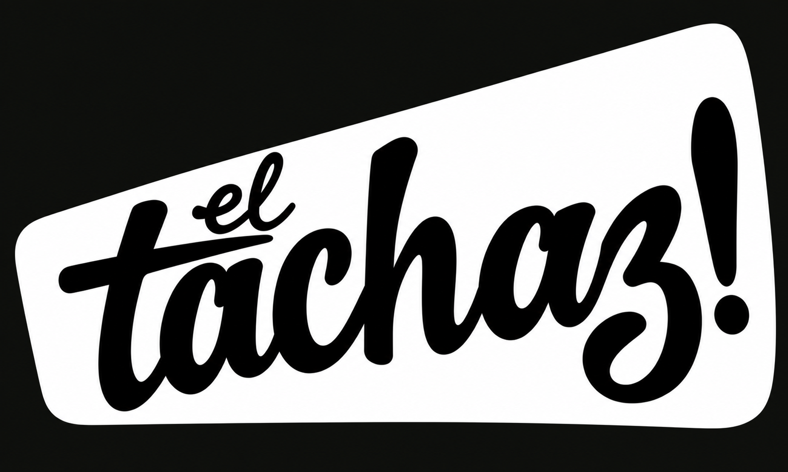
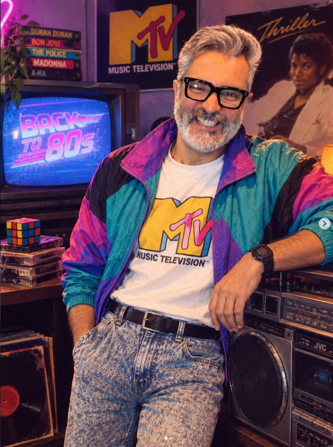

195.3mil
de alcance2,811 seguidores

ARMANDO ZEA M.
Historias.
Conversaciones.
Contenido.
MUCHO GUSTO. SOY
Soy Armando Zea.
Comunico y creo contenido
como El Tachaz.
YouTube, Instagram, TikTok,
Facebook, LinkedIn y Threads.
Una conversación que continúa.
195.3mil
77.2mil
36.8mil
Cifras del media kit proporcionado.
También en YouTube · Visita mi canal ↗60 a 90 segundos por reel
$3,500pesos
Si se requiere factura, se agrega IVA.
Vamos a contarlo ↗